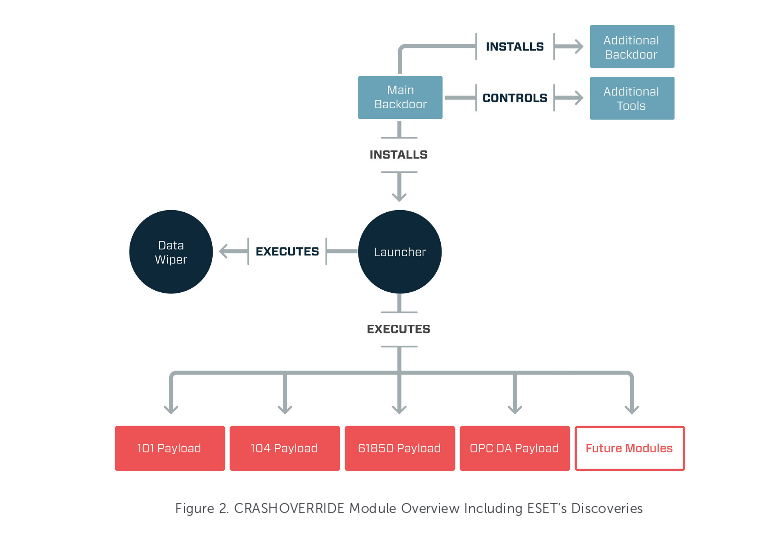

Created by Thomas Herr
NETS1038 Application Security
The Flaw
Abuses IEC101,IEC104, and IEC61850 (US-CERT, n.d)
101: Transmission Protocol (Automated Control of electrical systems)
104: Defines Network Access for 101
61850: Communication protocols for "intelligent" electronic devices
How it worked
Can issue commands to RTU (Remote Terminal Units) over ICS protocol (US-CERT, n.d)
Environment Mapping to aid in target selection and payload delivery (Lee, 2017)
Local DoS serial COM Ports (US-CERT, n.d)
DoS Siemens Relay
Remote Wipe Windows Systems
How it worked contd.

(Lee, 2017)
How big a deal is it?
Economically
"economic damage of power outages and quality disturbances are estimated to cost the American economy between $25 and $180 billion per annum, although the indirect costs could be up to five times higher."
How big a deal is it?
Societal
Food poisioning, shortages
Crime increase
Transportation System Failure
Communications Infrastructure
Medical Infrastructure
etc.
(Taylor & Francis, 2014)
Threat Level
Extremely High
Entire society moving towards increased reliance on electrical infrastructure